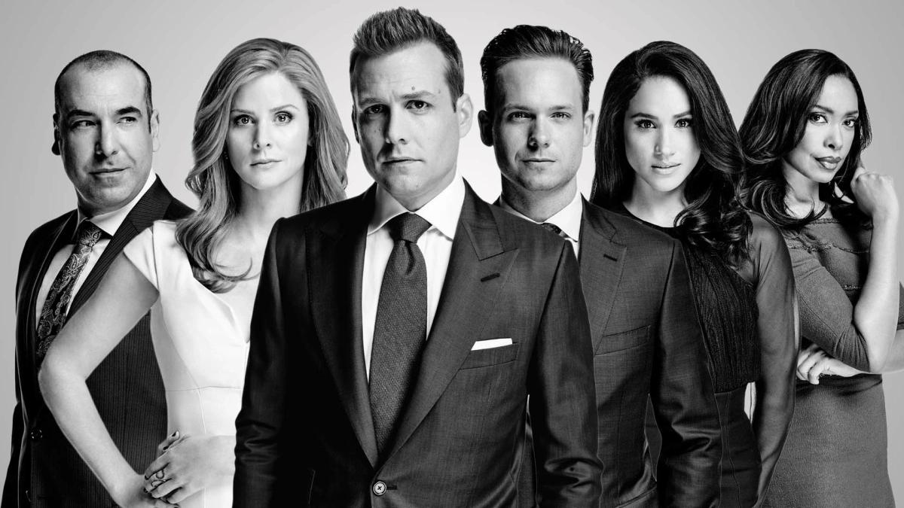

About Harvey
Harvey is good looking, confident and charismatic. He is the managing Partner of Pearson Specter Litt. Harvey wins 99% of his trials, has a driving work ethic and unorthodox methods.
Harvey and his colleagues
Harvey's Characteristics
- He's capable of being extremely charming, persuasive and playful
- Even though he is very wealthy, he still isn't snobbish
- He enjoys boxing and movies
Relationships
Harvey has few personal relationships, but the ones he has are very important to him. Click on the links below to read more about them: